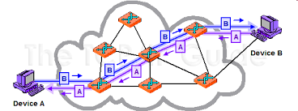
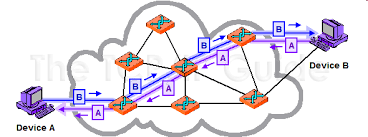

Introducción
La conmutación es el proceso mediante el cual se establece una conexión entre dos puntos para permitir la transmisión de información. Según Tanenbaum, este proceso determina el camino que siguen los datos dentro de una red.
Desarrollo
Existen distintos tipos de conmutación que varían según la forma en que se establece y mantiene la conexión. Stallings explica que la elección del tipo de conmutación influye directamente en la eficiencia, el retardo y la confiabilidad de la comunicación.
 

Conclusión
En conclusión, la conmutación es esencial para dirigir correctamente la información dentro de las redes de telecomunicaciones.